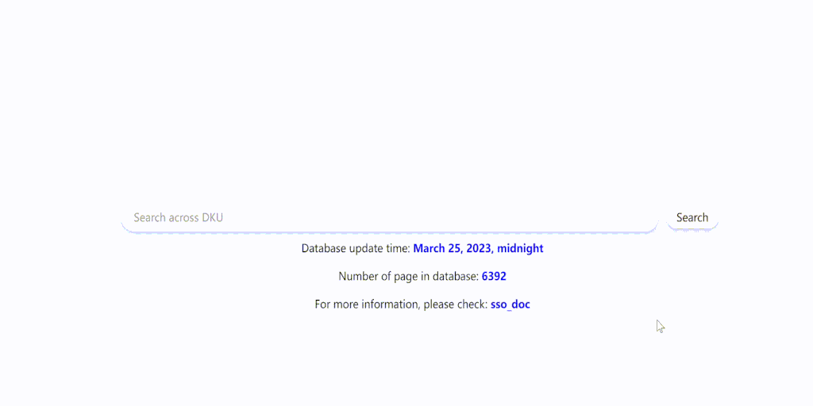

Welcome to the official digital home of SSO.
Discover everything you need to know about SSO right here.
SSO (Search So) is a purpose-built search engine designed with a specific focus on catering to the needs of mid-sized organizations like DKU. We excel in delivering swift, high-quality search results.
SSO is a fully automated, end-to-end search solution, primarily developed in Python. This comprehensive system encompasses a robust web scraper, efficient data processor, and user-friendly retrieval engine, all integrated seamlessly for an effortless user experience.
Utilizing SSO is as straightforward as operating any other search engine. Simply input your query into the search bar and press enter to initiate your search journey.

We support search for English and Chinese, but not other languages (such as C++) now.
NOTICE: One distinct feature of SSO compared to Google is that we don't support natural language input queries (for example, "how to set up DKU vpn?"). Instead, it is more effective to search for a single term like "VPN". This approach is directly tied to our underlying algorithm, which isn't optimized for natural language processing. For a detailed explanation, please refer to our Retrieval Engine section.
As alluded to earlier, the SSO is powered by three primary components - the Scraper, Data Processor, and Retrieval Engine.
Scraper: The Scraper is our data collection tool, meticulously extracting raw HTML from the web. This ensures no potential information is lost during the data collection process.
Data Processor: The Data Processor takes on the vital role of processing the raw information gathered by the Scraper. It culminates this process by generating an Inverted Index, accompanied by BM25 scores and PageRank.
Retrieval Engine: The Retrieval Engine comes into play when users engage with the search button. It seamlessly performs data retrieval from the database, ensuring accurate results are delivered swiftly.
What we've provided here is a high-level overview of these integral parts. For a more detailed understanding, including insights into the algorithms and strategies they employ, and their implementation process, we invite you to visit their respective pages. If you're intrigued by the inner workings of our system, these pages will provide a deeper dive into their functionality.
Our data is conscientiously gathered from public websites, with a significant portion originating from DKU's official website and its affiliated sites. These associated sites, linked by DKU's web pages, offer us the opportunity to assimilate a broader range of information from public spheres such as Twitter and personal blogs. However, please note that currently, our focus is on information pertinent to DKU. If you're looking to find information unrelated to DKU, for instance, how to play Genshin Impact, you may not find it in our SSO database.
When we refer to "public websites", we're emphasizing that our data mining is strictly confined to publicly accessible information. Rest easy, we're not privy to any confidential data from DKU such as details in the DKU hub or your records of misconduct (hope you don't have one). Your privacy is safe with us!
To ensure relevance and currency, SSO updates its database every midnight. This involves the Scraper revisiting all websites for any new data, while the Processor subsequently updates our information bank.
While this daily update allows us to maintain a historical data repository, we only display search results with currently available information. This means, even if a webpage was valid in the past, it won't appear in your search results if it's no longer accessible. Our primary goal is to provide you with the most accurate and up-to-date information.
DKU-Wiki is the sibling project of SSO, serving as a collaborative platform where individuals can contribute their unique insights, and they are searchable on SSO. You can craft a wiki for various topics, including majors, courses, events, or notable individuals - all these contents are easily accessible via SSO!
We acknowledge that SSO may not encompass all information as it is primarily web-focused, potentially missing out on events or happenings on campus that aren't shared online. DKU-Wiki fills this gap, providing an opportunity for you to share the stories, experiences, and insights you wish to disseminate. We particularly encourage sharing of experiences and recommendations regarding majors and courses, as detailed course information might not be readily available on the website.
We invite you to explore DKU-Wiki and begin contributing! As a fledgling project, we're eagerly looking for passionate contributors. Every piece of knowledge shared enriches our community and furthers our collective learning.
Our apologies if your search didn't yield the desired results. Yet, we consider such moments as opportunities for growth!
First, make sure you didn't search long sentences, the capability for understanding natural language input is directly relate to our algorithm, you can refer to Retrieval Engine for detailed explanation.
Also, please remember, as DKU's website is a relatively small digital platform, it holds limited information. While we strive for completeness, our current focus on DKU-only content means we can't match the vast range of a search engine like Google.
But there's still a large possibility that we might have overlooked some important websites in our current crawling strategy. If you're aware of any such missed sites, we'd be grateful to know!
Simply want your personal website to be searchable? We're delighted to facilitate that! Please follow this guide to attract more visitors to your website.
Additionally, if you've stumbled upon intriguing locations or sources that you think interesting, please don't hesitate to let us know! As long as the content is relevant to DKU, we would be more than happy to make it searchable within our system. Your active participation aids us in continually improving and expanding the breadth of our service.
Ensure you are connected to DKU's WiFi.
SSO, being primarily an internal search engine, operates on a server within the DKU LAN. If you are not on campus at the moment, you need to connect to DKU's proxy in order to access our server.
Both the DKU Wiki and SSO run on the same server, implying that you need to be connected to the internal network to access the Wiki as well.
At present, SSO is in its beta stage, with numerous areas ripe for enhancement. We acknowledge that perfection can't be achieved overnight; therefore, we're committed to making steady progress with every step.
If you encounter any bugs or have suggestions for our project, please feel welcome to post an issue on our bug report page. Your insight is highly valuable to us.
We strongly encourage and appreciate your suggestions as they play a pivotal role in shaping the future of SSO!
Jiang Long: DKU Senior Lecturer in Computer Science, supervisor of SSO project.
Kaiyuan Lou: DKU student, class of 2024, founder of SSO. He is responsible for structural design and implementation of processor, retrieval engine, and benchmark system.
Loe Bi: DKU student, class of 2024, key contributor. His primary responsibilities encompass the design of the database structure, webapp deployment, and automation. Additionally, he has played a crucial role in implementing the data processor and retrieval engine.
Sichang He: DKU student, class of 2024, key contributor. He designed and implemented the Scraper, and he also contribute to front-end design.
Beilong Tang: DKU student, class of 2025, key contributor. He is responsible in design and implementation of DKU-Wiki, and he also contribute to benchmark system and front-end.
Echchabi Othmane DKU student, class of 2025. He offers idea for front-end improvements.
Jay Shi: DKU student, class of 2025. He is responsible for managing DII-relate tasks.